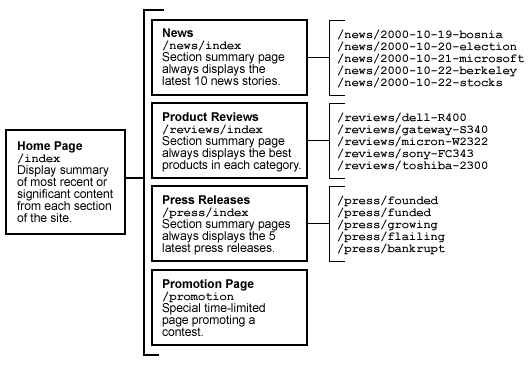

The Content Management System restricts access to registered users. Attempting to access a CMS page without having properly logged in will automatically redirect the user to a sign-in page.
Content items are created either by entering text in a browser or uploading files. In addition, an authorized user can add/edit extended attributes associated with the content item. Content items may also be edited by entering new text via a browser or uploading new files. Changes made to the content or extended attributes are stored as revisions of the content item.
Content is published by merging data with templates that specify the format and layout of the finished page. A template is a text file consisting largely of static text and markup such as HTML, WML, SGML or XML. The template also has strategically positioned placeholders dictating the position of content attributes and data.
There are two basic types of templates:
Templates associated with specific content types. The template contains placeholders for each attribute associated with a content item of that type. For example, the template for a news story may contain placeholders for a title, byline, image, and the body of the story. The template may also incorporate other related dynamic data, such as lists of related links or information such as stock quotes, pricing or inventory.
A content type may be associated with multiple templates, enabling publishers and users to choose the presentation of each item individually depending on context, device or any other criteria.
Templates associated with individual pages. The template is applied only to a specific page on the site. Typically these pages display summary information, such as top-level pages that list the title and description of recent content added to the site. These pages may also be highly personalized, providing links to relevant content or displaying specific data based on a user's profile and preferences.
Production templates are stored in the file system under a special directory known as the template root. Additional directories may exist under the template root to further organize the entire set of templates used by a site.
CMS includes a set of basic tools for managing the production and deployment of templates:
Organization. Templates may be organized into folders, reflecting their location under the template root once they go into production. Since the templates are never viewed directory from a public server, this organization does not necessarily correspond to what is specified in the site map.
Versioning. Before templates go into production, drafts are stored in the database. A full revision history is maintained, enabling designers or managers to track changes and revert to previous versions.
Data Dictionary. Designers may review the data sources available to a template, so they know the set of valid placeholders to embed in the markup.
Asset Management. Templates may include static references to graphics, sounds, animation or other media assets that are also managed with CMS. Designers and managers can view and manage asset dependencies for a template.
Deployment. The live version of a template is always written to the file system, from where the system may use it for publishing to either the file system or directly to clients.
The typical process of developing a template for use with CMS is as follows:
Information design. The first step is to decide on the information that the template will present.
For a reusable template applicable to any item of a particular type, this may include the following:
The body of the content item.
Attributes of the content item, such as the author, title and publication date.
Links to related items.
Keywords and other metadata for inclusion in the META tags of the document.
For individual page templates, the information may be anything. Index pages may query for the latest items publishing in a section, or for featured items previously selected by the publishing team.
Implement data sources. The product of the information design step is a list of data sources. A data source is typically a database query, but may be modified or created in procedural code as well (see the templating system documentation for details).
The data sources are implemented in a Tcl script that must reside in the directory where the template is written when published. CMS does not currently provide any UI for management of the Tcl scripts. This must be done with CVS.
The developer should document each data source using the documentation directives provided by the templating system. CMS parses these directives and presents the documentation to the designer in the UI.
Write template. The first simple prototype of the template itself is typically written by the developer for the purpose of debugging the Tcl script. The developer may create this file in the file system, and then use the CMS UI to read it into the repository as the first revision of the template.
Revise template. Once the initial version of the template is created, the designer may either edit the template in the browser, or more likely, download the template and edit it in a client editor and then upload it again to test.
As mentioned earlier, templates can be associated with a specific content type or an individual page (content item). In order to associate a template to a specific content item, the template must first be associated with that item's content type.
Content may be previewed at any time (even before deployment) so long as one revision is designated the Live Revision, the revision that will be previewed.
Content can either be deployed immediately or scheduled for future deployment (and expiration). Before deployment, however, the content item must satisfy the following preconditions:
One revision must be designated the Live Revision, the revision that will eventually be deployed.
The content item must be in a publishable state. The exact conditions for a content item being publishable will vary from item to item, depending on whether that item requires components to be finished and whether that item has to pass through the production workflow.
Consider the site map for a simple dynamic, content-rich site:

Each page in the site map corresponds to an item in the content repository. Note that the pages in the site map have two basic relationships to the actual content of the site:
The majority of the pages in the site are dedicated to displaying the body and attributes of individual content items or small logical collections of items, such as the photos on an album page.
In addition to the content pages themselves, publishers must implement index pages to provide context for the content of the site. These top-level pages provide an interface for searching and navigating among the sections of the site and for reaching recent or featured content. Besides index pages, the site may also have special pages without a direct relationship to content.
In order to be represented in the site map and managed in a consistent fashion, top-level and special pages must also be represented as content items. In the simplest case, the content type of these items may just be a Basic Item. This is appropriate because these pages typically possess little if any content or special attributes of their own, acting merely as containers for presenting aggregated summary information. If the top-level pages of your site do possess special attributes, or if you wish to constrain the relations on those pages, then you can also employ a subtype.
There are two necessary conditions for an item to be represented as a page:
The item must have a unique URL. This is true for all content items. Just as the absolute path to a file reflects its location within a directory in the file system, the URL for an item reflects its position within the hierarchical organization of the repository. The URL is simply composed of the name of the item preceded by the names of all its parent items.
One major difference from a file system is that the URL includes all parent items, regardless of whether they are folders or not. This is necessary to ensure that all URL's are indeed unique.
The item must be associated with a presentation template. For content pages, the template is typically selected from the one or more templates that are registered with the items's content type. For top-level and special pages, the template is typically unique to the page.